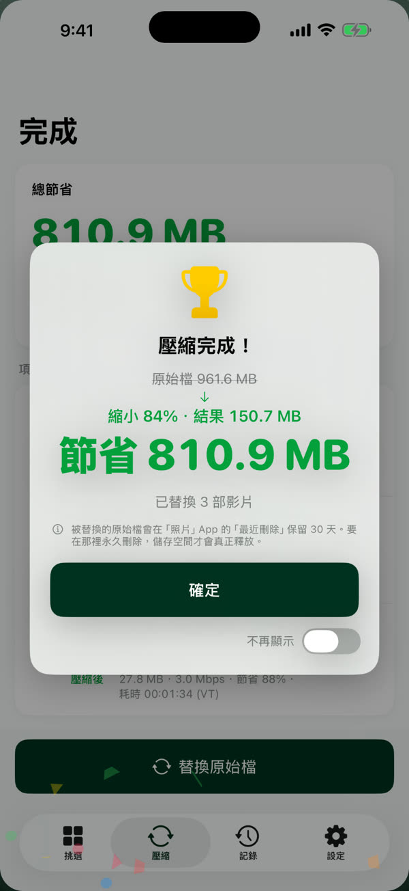
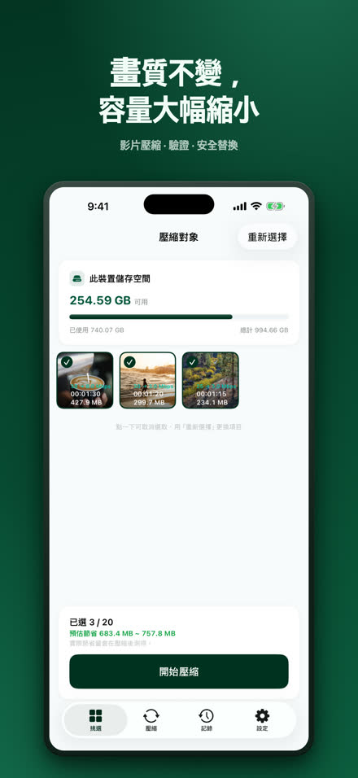
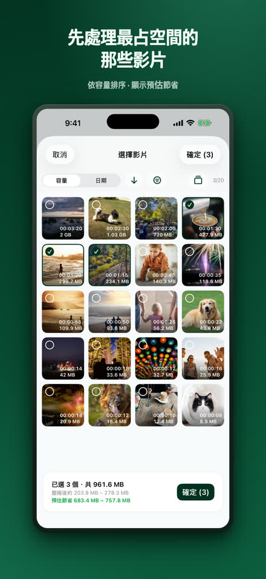
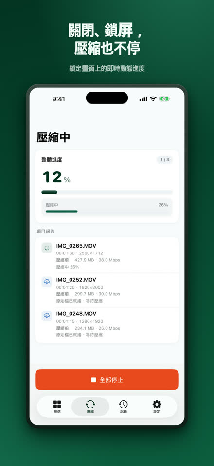
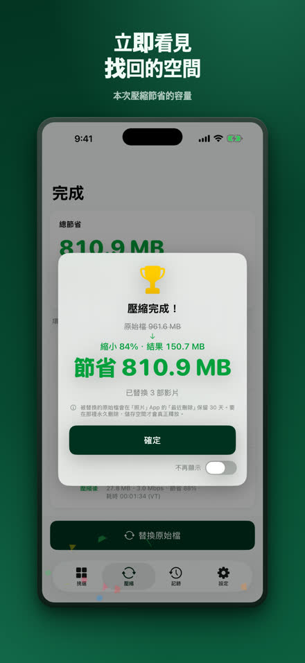
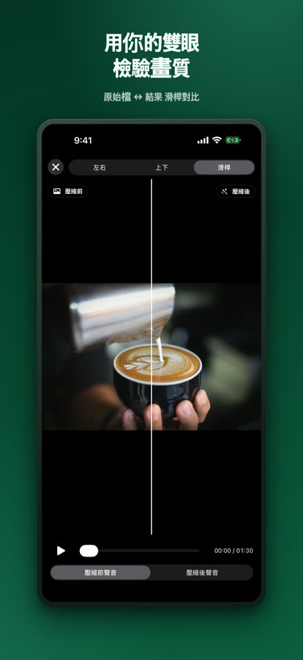
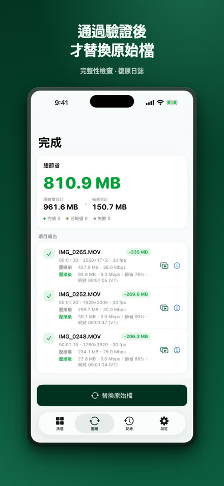
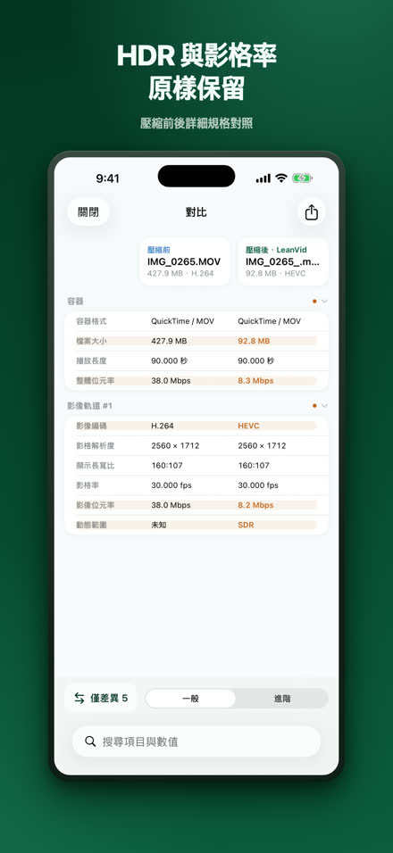
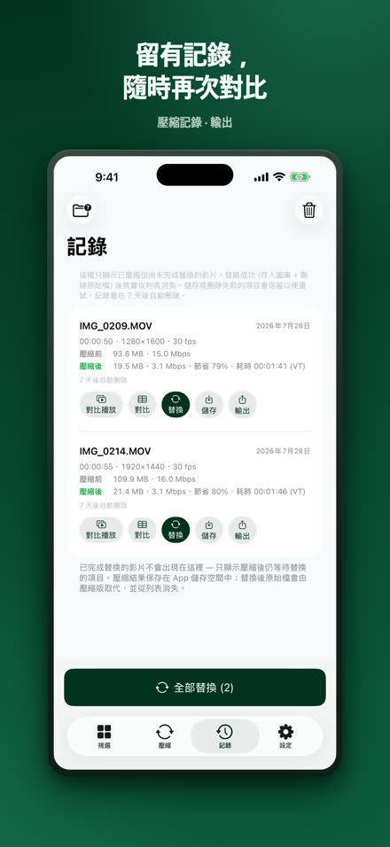

LeanVid
縮小影片，畫質不變。
LeanVid 只降低位元率來壓縮照片圖庫和「檔案」App 中的影片——解析度、影格率、色彩和 HDR 保持不變。每個結果在取代原始檔之前都會經過驗證，照片圖庫中的原始檔可在 30 天內復原。
在 App Store 下載iOS 18 或以上版本 · iPhone 與 iPad（在搭載 Apple silicon 的 Mac 上也能以 iPad App 形式執行）

同一段影片，只佔一小部分空間。
原始檔3:341.24 GB
LeanVid3:3499.4 MB
約小 92%
我們的實測：一段 3 分 34 秒的螢幕錄影。結果因影片而異。
選好、壓縮、確認、替換。








需要的功能，一應俱全。
保留畫質的壓縮
僅調整位元率，保留 HDR 與每一條軌道
經過驗證的安全取代
完整性檢查、復原日誌、系統確認
親眼確認
並排與滑桿比較、完整規格表
「檔案」App 與更多格式
也可以選擇「我的 iPhone」和 iCloud 雲碟中的影片；MKV、WebM、AVI、WMV、FLV、TS、MPG、VOB 檔案會在裝置上轉換為 HEVC/MP4
無需等待
背景壓縮，並以 Live Activity 顯示進度（iOS 26 以上）；較早的版本會在您回到 App 時自動繼續
裝置本機處理
您的影片在 iPhone 上壓縮，絕不會被上傳；無需帳號 — 隱私權